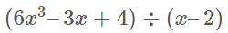
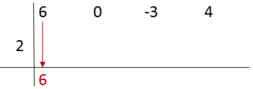
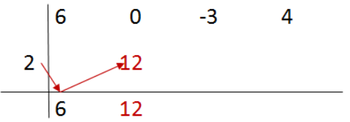
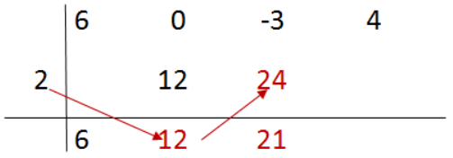
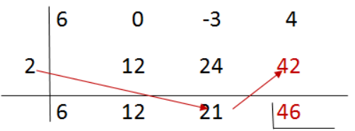
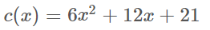
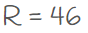

1. Regla de Ruffini
Debido a la importancia que tiene la división de polinomios cuando el polinomio divisor es de la forma x − a, es conveniente agilizar tales divisiones.
|
La regla de Ruffini es un algoritmo que nos proporciona tanto el cociente como el resto al dividir un polinomio cualquiera entre otro de la forma x − a. La regla de Ruffini también se utiliza para descomponer un polinomio en un producto de factores como veremos en un punto posterior. |
En el siguiente ejemplo se muestra dicho algoritmo (procedimiento de cálculo):

- Paso 1: El dividendo se ordena de forma decreciente y se colocan sus coeficientes. Si en el polinomio dividendo faltan términos, como en este caso, se ponen 0 en los lugares de esos términos. Debajo y desplazado a la izquierda se coloca el término independiente del divisor cambiado de signo (a = 2). Para terminar este paso se baja el primer coeficiente del dividendo (6).

- Paso 2: Para obtener el segundo coeficiente del cociente se multiplica el 6 que hemos bajado por 2 y se suma con 0.

- Paso 3: El tercer coeficiente del cociente se calcula multiplicando 12 por 2 y sumando -3.

- Paso 4: Para finalizar se obtiene el resto multiplicando 21 por 2 y sumándole 4.

Como el cociente es un grado menor que el dividendo resulta que el cociente es el polinomio:

y el resto es:
